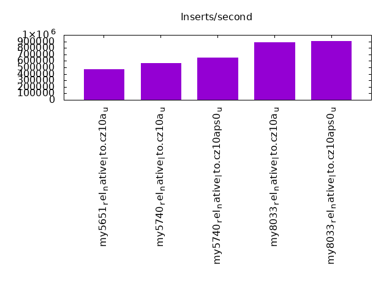
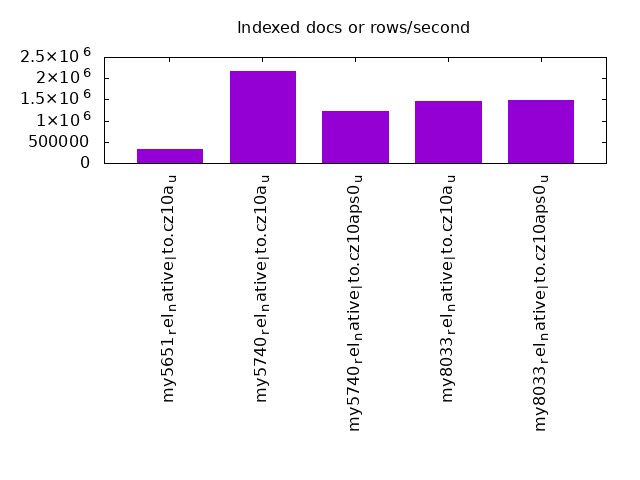
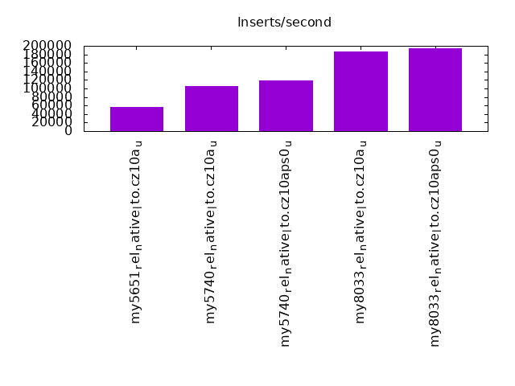
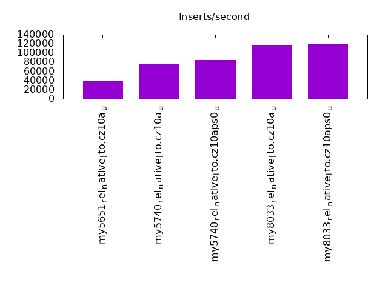
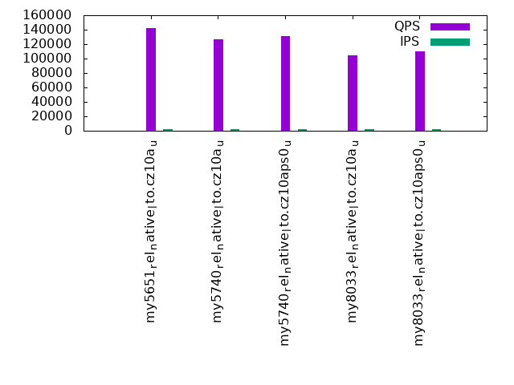
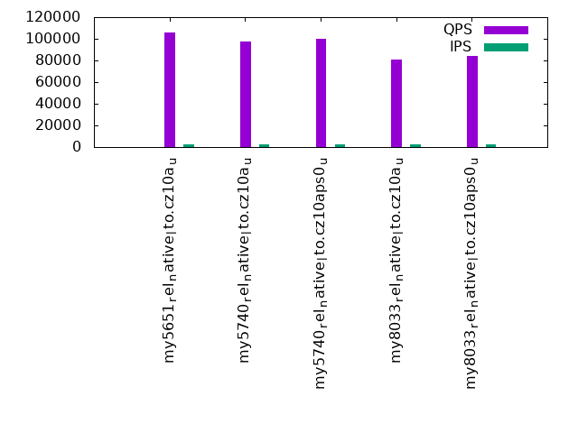
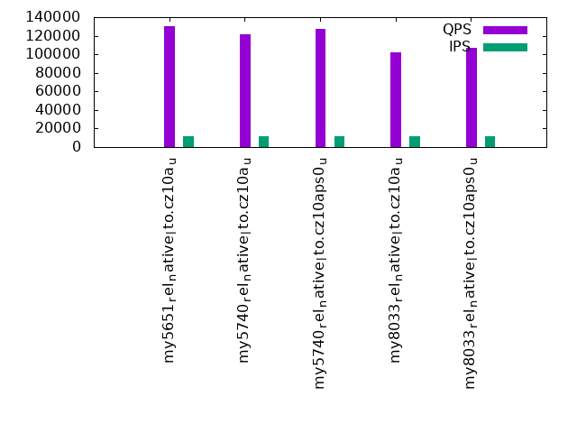
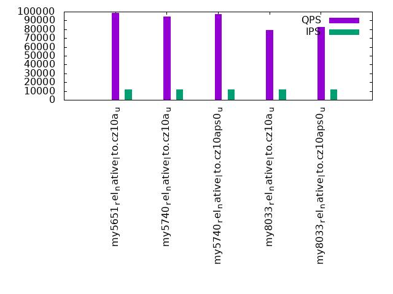
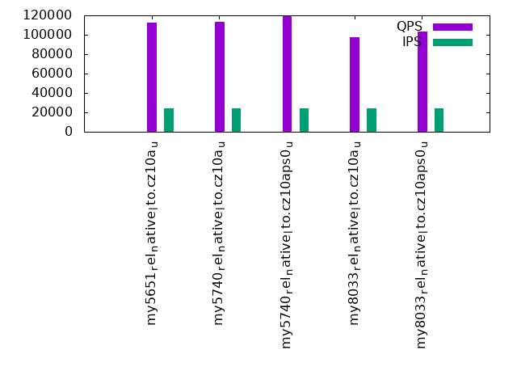
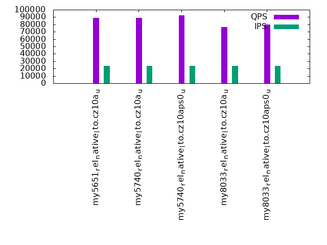

This is a report for the insert benchmark with 480M docs and 24 client(s). It is generated by scripts (bash, awk, sed) and Tufte might not be impressed. An overview of the insert benchmark is here and a short update is here. Below, by DBMS, I mean DBMS+version.config. An example is my8020.c10b40 where my means MySQL, 8020 is version 8.0.20 and c10b40 is the name for the configuration file.
The test server has 40 cores, 80 HW threads (hyperthreads enabled), 256G RAM and many TB of fast NVMe SSD with XFS and SW RAID 0. The benchmark was run with 24 clients and there were 1 or 3 connections per client (1 for queries or inserts without rate limits, 1+1 for rate limited inserts+deletes). It uses 1 table per client. It loads 20M rows per table without secondary indexes, creates 3 secondary indexes per table, then inserts 50m+50m rows per table with a delete per insert to avoid growing the table. It then does 6 read+write tests for 3600s each that do queries as fast as possible with 100,100,500,500,1000,1000 inserts/s and the same for deletes/s per client concurrent with the queries. The database is cached in memory. Clients and the DBMS share one server. The per-database configs are in the per-database subdirectories here.
The tested DBMS are:
The numbers are inserts/s for l.i0, l.i1 and l.i2, indexed docs (or rows) /s for l.x and queries/s for qr100, qp100 thru qr1000, qp1000" The values are the average rate over the entire test for inserts (IPS) and queries (QPS). The range of values for IPS and QPS is split into 3 parts: bottom 25%, middle 50%, top 25%. Values in the bottom 25% have a red background, values in the top 25% have a green background and values in the middle have no color. A gray background is used for values that can be ignored because the DBMS did not sustain the target insert rate. Red backgrounds are not used when the minimum value is within 80% of the max value.
| dbms | l.i0 | l.x | l.i1 | l.i2 | qr100 | qp100 | qr500 | qp500 | qr1000 | qp1000 |
|---|---|---|---|---|---|---|---|---|---|---|
| my5651_rel_native_lto.cz10a_u | 473840 | 335196 | 57341 | 38505 | 142018 | 106114 | 130264 | 98950 | 112780 | 88731 |
| my5740_rel_native_lto.cz10a_u | 567376 | 2162163 | 105506 | 77046 | 126370 | 97232 | 121975 | 94520 | 113349 | 88875 |
| my5740_rel_native_lto.cz10aps0_u | 654843 | 1221374 | 119195 | 84240 | 131022 | 99977 | 127440 | 97270 | 118943 | 92584 |
| my8033_rel_native_lto.cz10a_u | 883978 | 1467890 | 187171 | 117302 | 104266 | 80693 | 101703 | 79173 | 97896 | 76283 |
| my8033_rel_native_lto.cz10aps0_u | 907372 | 1486068 | 194489 | 120603 | 110077 | 84315 | 107335 | 82730 | 103571 | 79769 |
This table has relative throughput, throughput for the DBMS relative to the DBMS in the first line, using the absolute throughput from the previous table. Values less than 0.95 have a yellow background. Values greater than 1.05 have a blue background.
| dbms | l.i0 | l.x | l.i1 | l.i2 | qr100 | qp100 | qr500 | qp500 | qr1000 | qp1000 |
|---|---|---|---|---|---|---|---|---|---|---|
| my5651_rel_native_lto.cz10a_u | 1.00 | 1.00 | 1.00 | 1.00 | 1.00 | 1.00 | 1.00 | 1.00 | 1.00 | 1.00 |
| my5740_rel_native_lto.cz10a_u | 1.20 | 6.45 | 1.84 | 2.00 | 0.89 | 0.92 | 0.94 | 0.96 | 1.01 | 1.00 |
| my5740_rel_native_lto.cz10aps0_u | 1.38 | 3.64 | 2.08 | 2.19 | 0.92 | 0.94 | 0.98 | 0.98 | 1.05 | 1.04 |
| my8033_rel_native_lto.cz10a_u | 1.87 | 4.38 | 3.26 | 3.05 | 0.73 | 0.76 | 0.78 | 0.80 | 0.87 | 0.86 |
| my8033_rel_native_lto.cz10aps0_u | 1.91 | 4.43 | 3.39 | 3.13 | 0.78 | 0.79 | 0.82 | 0.84 | 0.92 | 0.90 |
This lists the average rate of inserts/s for the tests that do inserts concurrent with queries. For such tests the query rate is listed in the table above. The read+write tests are setup so that the insert rate should match the target rate every second. Cells that are not at least 95% of the target have a red background to indicate a failure to satisfy the target.
| dbms | qr100.L1 | qp100.L2 | qr500.L3 | qp500.L4 | qr1000.L5 | qp1000.L6 |
|---|---|---|---|---|---|---|
| my5651_rel_native_lto.cz10a_u | 2381 | 2381 | 11907 | 11907 | 23828 | 23834 |
| my5740_rel_native_lto.cz10a_u | 2381 | 2381 | 11907 | 11907 | 23828 | 23828 |
| my5740_rel_native_lto.cz10aps0_u | 2381 | 2381 | 11907 | 11907 | 23828 | 23834 |
| my8033_rel_native_lto.cz10a_u | 2381 | 2382 | 11907 | 11907 | 23828 | 23828 |
| my8033_rel_native_lto.cz10aps0_u | 2382 | 2381 | 11907 | 11907 | 23828 | 23828 |
| target | 2400 | 2400 | 12000 | 12000 | 24000 | 24000 |
l.i0: load without secondary indexes. Graphs for performance per 1-second interval are here.
Average throughput:
Insert response time histogram: each cell has the percentage of responses that take <= the time in the header and max is the max response time in seconds. For the max column values in the top 25% of the range have a red background and in the bottom 25% of the range have a green background. The red background is not used when the min value is within 80% of the max value.
| dbms | 256us | 1ms | 4ms | 16ms | 64ms | 256ms | 1s | 4s | 16s | gt | max |
|---|---|---|---|---|---|---|---|---|---|---|---|
| my5651_rel_native_lto.cz10a_u | 0.292 | 9.555 | 89.820 | 0.295 | 0.038 | 0.091 | |||||
| my5740_rel_native_lto.cz10a_u | 0.196 | 47.544 | 52.214 | 0.002 | 0.043 | 0.091 | |||||
| my5740_rel_native_lto.cz10aps0_u | 0.199 | 90.834 | 8.920 | 0.004 | 0.043 | 0.114 | |||||
| my8033_rel_native_lto.cz10a_u | 99.925 | 0.030 | 0.014 | 0.032 | 0.118 | ||||||
| my8033_rel_native_lto.cz10aps0_u | 99.933 | 0.020 | 0.021 | 0.026 | 0.117 |
Performance metrics for the DBMS listed above. Some are normalized by throughput, others are not. Legend for results is here.
ips qps rps rmbps wps wmbps rpq rkbpq wpi wkbpi csps cpups cspq cpupq dbgb1 dbgb2 rss maxop p50 p99 tag 473840 0 0 0.0 2352.3 114.5 0.000 0.000 0.005 0.247 68922 38.4 0.145 65 31.8 160.3 45.7 0.091 19590 17482 my5651_rel_native_lto.cz10a_u 567376 0 0 0.0 2823.8 134.9 0.000 0.000 0.005 0.244 80138 40.4 0.141 57 31.8 160.3 47.2 0.091 24176 21579 my5740_rel_native_lto.cz10a_u 654843 0 0 0.0 3208.3 154.4 0.000 0.000 0.005 0.241 91120 42.5 0.139 52 31.8 160.3 46.8 0.114 28072 24979 my5740_rel_native_lto.cz10aps0_u 883978 0 0 0.0 4191.9 224.0 0.000 0.000 0.005 0.259 198816 51.4 0.225 47 31.7 160.3 47.2 0.118 38761 32568 my8033_rel_native_lto.cz10a_u 907372 0 0 0.0 4306.1 230.2 0.000 0.000 0.005 0.260 179242 49.8 0.198 44 31.7 160.3 46.2 0.117 39061 31369 my8033_rel_native_lto.cz10aps0_u
l.x: create secondary indexes.
Average throughput:
Performance metrics for the DBMS listed above. Some are normalized by throughput, others are not. Legend for results is here.
ips qps rps rmbps wps wmbps rpq rkbpq wpi wkbpi csps cpups cspq cpupq dbgb1 dbgb2 rss maxop p50 p99 tag 335196 0 383 1.5 18793.4 649.4 0.001 0.005 0.056 1.984 68891 30.6 0.206 73 66.9 195.4 81.9 0.002 NA NA my5651_rel_native_lto.cz10a_u 2162163 0 0 0.0 36162.6 1956.4 0.000 0.000 0.017 0.927 150135 30.9 0.069 11 72.8 201.4 82.1 0.003 NA NA my5740_rel_native_lto.cz10a_u 1221374 0 0 0.0 20542.5 1107.5 0.000 0.000 0.017 0.929 119098 29.6 0.098 19 72.8 201.4 83.3 0.002 NA NA my5740_rel_native_lto.cz10aps0_u 1467890 0 8177 388.0 32472.9 1202.6 0.006 0.271 0.022 0.839 174909 73.9 0.119 40 72.7 201.2 69.3 0.005 NA NA my8033_rel_native_lto.cz10a_u 1486068 0 8344 396.0 32830.3 1217.9 0.006 0.273 0.022 0.839 220709 71.1 0.149 38 72.7 201.2 75.2 0.010 NA NA my8033_rel_native_lto.cz10aps0_u
l.i1: continue load after secondary indexes created with 50 inserts per transaction. Graphs for performance per 1-second interval are here.
Average throughput:
Insert response time histogram: each cell has the percentage of responses that take <= the time in the header and max is the max response time in seconds. For the max column values in the top 25% of the range have a red background and in the bottom 25% of the range have a green background. The red background is not used when the min value is within 80% of the max value.
| dbms | 256us | 1ms | 4ms | 16ms | 64ms | 256ms | 1s | 4s | 16s | gt | max |
|---|---|---|---|---|---|---|---|---|---|---|---|
| my5651_rel_native_lto.cz10a_u | 0.012 | 5.503 | 94.473 | 0.012 | 0.254 | ||||||
| my5740_rel_native_lto.cz10a_u | 0.020 | 99.795 | 0.150 | 0.034 | nonzero | nonzero | 3.793 | ||||
| my5740_rel_native_lto.cz10aps0_u | 0.029 | 99.796 | 0.147 | 0.028 | nonzero | nonzero | 1.200 | ||||
| my8033_rel_native_lto.cz10a_u | 25.715 | 73.769 | 0.355 | 0.140 | 0.021 | 0.540 | |||||
| my8033_rel_native_lto.cz10aps0_u | 26.253 | 73.240 | 0.325 | 0.164 | 0.018 | 0.539 |
Delete response time histogram: each cell has the percentage of responses that take <= the time in the header and max is the max response time in seconds. For the max column values in the top 25% of the range have a red background and in the bottom 25% of the range have a green background. The red background is not used when the min value is within 80% of the max value.
| dbms | 256us | 1ms | 4ms | 16ms | 64ms | 256ms | 1s | 4s | 16s | gt | max |
|---|---|---|---|---|---|---|---|---|---|---|---|
| my5651_rel_native_lto.cz10a_u | 0.017 | 8.896 | 91.078 | 0.008 | 0.149 | ||||||
| my5740_rel_native_lto.cz10a_u | 0.046 | 99.803 | 0.118 | 0.032 | nonzero | nonzero | 3.848 | ||||
| my5740_rel_native_lto.cz10aps0_u | 0.073 | 99.770 | 0.130 | 0.027 | nonzero | nonzero | 1.178 | ||||
| my8033_rel_native_lto.cz10a_u | 52.513 | 46.189 | 0.598 | 0.570 | 0.130 | 0.574 | |||||
| my8033_rel_native_lto.cz10aps0_u | 55.173 | 43.440 | 0.578 | 0.657 | 0.153 | 0.730 |
Performance metrics for the DBMS listed above. Some are normalized by throughput, others are not. Legend for results is here.
ips qps rps rmbps wps wmbps rpq rkbpq wpi wkbpi csps cpups cspq cpupq dbgb1 dbgb2 rss maxop p50 p99 tag 57341 0 1642 7.0 5644.5 179.3 0.029 0.124 0.098 3.202 131582 65.3 2.295 911 226.9 403.1 215.8 0.254 2398 1998 my5651_rel_native_lto.cz10a_u 105506 0 124 1.9 9392.1 300.8 0.001 0.019 0.089 2.919 112699 69.3 1.068 525 235.6 415.0 216.8 3.793 4396 3996 my5740_rel_native_lto.cz10a_u 119195 0 140 2.2 10283.0 330.7 0.001 0.018 0.086 2.841 129341 69.5 1.085 466 235.8 414.6 216.7 1.200 4995 4495 my5740_rel_native_lto.cz10aps0_u 187171 0 1229 19.2 16435.2 540.7 0.007 0.105 0.088 2.958 865898 57.0 4.626 244 247.7 437.8 216.2 0.540 7892 3496 my8033_rel_native_lto.cz10a_u 194489 0 1225 19.1 16855.3 555.6 0.006 0.101 0.087 2.925 825354 58.7 4.244 241 246.9 438.0 216.0 0.539 8541 3846 my8033_rel_native_lto.cz10aps0_u
l.i2: continue load after secondary indexes created with 5 inserts per transaction. Graphs for performance per 1-second interval are here.
Average throughput:
Insert response time histogram: each cell has the percentage of responses that take <= the time in the header and max is the max response time in seconds. For the max column values in the top 25% of the range have a red background and in the bottom 25% of the range have a green background. The red background is not used when the min value is within 80% of the max value.
| dbms | 256us | 1ms | 4ms | 16ms | 64ms | 256ms | 1s | 4s | 16s | gt | max |
|---|---|---|---|---|---|---|---|---|---|---|---|
| my5651_rel_native_lto.cz10a_u | nonzero | 0.437 | 82.597 | 16.960 | 0.006 | nonzero | 0.130 | ||||
| my5740_rel_native_lto.cz10a_u | nonzero | 6.323 | 93.598 | 0.067 | 0.005 | 0.007 | 0.118 | ||||
| my5740_rel_native_lto.cz10aps0_u | nonzero | 12.606 | 87.318 | 0.064 | 0.006 | 0.005 | 0.109 | ||||
| my8033_rel_native_lto.cz10a_u | 69.926 | 29.932 | 0.133 | 0.003 | 0.007 | 0.142 | |||||
| my8033_rel_native_lto.cz10aps0_u | 72.601 | 27.247 | 0.143 | 0.004 | 0.005 | 0.119 |
Delete response time histogram: each cell has the percentage of responses that take <= the time in the header and max is the max response time in seconds. For the max column values in the top 25% of the range have a red background and in the bottom 25% of the range have a green background. The red background is not used when the min value is within 80% of the max value.
| dbms | 256us | 1ms | 4ms | 16ms | 64ms | 256ms | 1s | 4s | 16s | gt | max |
|---|---|---|---|---|---|---|---|---|---|---|---|
| my5651_rel_native_lto.cz10a_u | nonzero | 0.523 | 83.640 | 15.829 | 0.008 | nonzero | 0.132 | ||||
| my5740_rel_native_lto.cz10a_u | nonzero | 5.884 | 94.036 | 0.067 | 0.006 | 0.007 | 0.118 | ||||
| my5740_rel_native_lto.cz10aps0_u | nonzero | 11.735 | 88.187 | 0.065 | 0.007 | 0.005 | 0.109 | ||||
| my8033_rel_native_lto.cz10a_u | 75.394 | 24.447 | 0.150 | 0.003 | 0.007 | 0.120 | |||||
| my8033_rel_native_lto.cz10aps0_u | 77.052 | 22.779 | 0.160 | 0.004 | 0.005 | 0.117 |
Performance metrics for the DBMS listed above. Some are normalized by throughput, others are not. Legend for results is here.
ips qps rps rmbps wps wmbps rpq rkbpq wpi wkbpi csps cpups cspq cpupq dbgb1 dbgb2 rss maxop p50 p99 tag 38505 0 5508 30.4 6180.2 185.2 0.143 0.808 0.161 4.925 340195 54.3 8.835 1128 237.3 433.8 215.9 0.130 1603 1484 my5651_rel_native_lto.cz10a_u 77046 0 1516 23.7 10452.3 317.3 0.020 0.315 0.136 4.217 552664 57.4 7.173 596 248.1 447.7 216.8 0.118 3242 2962 my5740_rel_native_lto.cz10a_u 84240 0 1676 26.2 11178.0 339.6 0.020 0.318 0.133 4.129 596326 57.0 7.079 541 247.7 446.2 216.7 0.109 3536 3257 my5740_rel_native_lto.cz10aps0_u 117302 0 2740 42.8 14961.9 466.3 0.023 0.374 0.128 4.070 1194482 62.7 10.183 428 258.8 486.2 216.2 0.142 5035 4495 my8033_rel_native_lto.cz10a_u 120603 0 2831 44.2 15320.3 478.2 0.023 0.376 0.127 4.060 1218526 62.8 10.104 417 260.3 488.6 216.0 0.119 4965 4470 my8033_rel_native_lto.cz10aps0_u
qr100.L1: range queries with 100 insert/s per client. Graphs for performance per 1-second interval are here.
Average throughput:
Query response time histogram: each cell has the percentage of responses that take <= the time in the header and max is the max response time in seconds. For max values in the top 25% of the range have a red background and in the bottom 25% of the range have a green background. The red background is not used when the min value is within 80% of the max value.
| dbms | 256us | 1ms | 4ms | 16ms | 64ms | 256ms | 1s | 4s | 16s | gt | max |
|---|---|---|---|---|---|---|---|---|---|---|---|
| my5651_rel_native_lto.cz10a_u | 99.342 | 0.647 | 0.011 | 0.001 | nonzero | 0.041 | |||||
| my5740_rel_native_lto.cz10a_u | 96.840 | 3.157 | 0.003 | nonzero | nonzero | 0.022 | |||||
| my5740_rel_native_lto.cz10aps0_u | 98.207 | 1.790 | 0.003 | nonzero | nonzero | 0.043 | |||||
| my8033_rel_native_lto.cz10a_u | 84.667 | 15.328 | 0.005 | nonzero | nonzero | 0.048 | |||||
| my8033_rel_native_lto.cz10aps0_u | 90.978 | 9.017 | 0.004 | nonzero | nonzero | 0.023 |
Insert response time histogram: each cell has the percentage of responses that take <= the time in the header and max is the max response time in seconds. For max values in the top 25% of the range have a red background and in the bottom 25% of the range have a green background. The red background is not used when the min value is within 80% of the max value.
| dbms | 256us | 1ms | 4ms | 16ms | 64ms | 256ms | 1s | 4s | 16s | gt | max |
|---|---|---|---|---|---|---|---|---|---|---|---|
| my5651_rel_native_lto.cz10a_u | 14.258 | 82.945 | 2.797 | 0.053 | |||||||
| my5740_rel_native_lto.cz10a_u | 63.479 | 36.344 | 0.177 | 0.028 | |||||||
| my5740_rel_native_lto.cz10aps0_u | 90.848 | 8.612 | 0.541 | 0.048 | |||||||
| my8033_rel_native_lto.cz10a_u | 88.641 | 11.355 | 0.003 | 0.056 | |||||||
| my8033_rel_native_lto.cz10aps0_u | 92.509 | 7.491 | 0.010 |
Delete response time histogram: each cell has the percentage of responses that take <= the time in the header and max is the max response time in seconds. For max values in the top 25% of the range have a red background and in the bottom 25% of the range have a green background. The red background is not used when the min value is within 80% of the max value.
| dbms | 256us | 1ms | 4ms | 16ms | 64ms | 256ms | 1s | 4s | 16s | gt | max |
|---|---|---|---|---|---|---|---|---|---|---|---|
| my5651_rel_native_lto.cz10a_u | 25.455 | 72.844 | 1.701 | 0.053 | |||||||
| my5740_rel_native_lto.cz10a_u | 85.462 | 14.428 | 0.110 | 0.028 | |||||||
| my5740_rel_native_lto.cz10aps0_u | 96.278 | 3.259 | 0.464 | 0.045 | |||||||
| my8033_rel_native_lto.cz10a_u | 99.953 | 0.046 | 0.001 | 0.051 | |||||||
| my8033_rel_native_lto.cz10aps0_u | 99.957 | 0.043 | 0.010 |
Performance metrics for the DBMS listed above. Some are normalized by throughput, others are not. Legend for results is here.
ips qps rps rmbps wps wmbps rpq rkbpq wpi wkbpi csps cpups cspq cpupq dbgb1 dbgb2 rss maxop p50 p99 tag 2381 142018 136 1.2 649.3 18.7 0.001 0.009 0.273 8.046 562441 33.5 3.960 189 237.3 433.8 215.9 0.041 5914 5402 my5651_rel_native_lto.cz10a_u 2381 126370 54 0.8 1324.3 37.3 0.000 0.007 0.556 16.042 502063 32.8 3.973 208 248.1 447.7 216.9 0.022 5322 4859 my5740_rel_native_lto.cz10a_u 2381 131022 54 0.8 1295.6 36.5 0.000 0.007 0.544 15.711 520018 32.1 3.969 196 247.7 446.2 216.7 0.043 5498 5002 my5740_rel_native_lto.cz10aps0_u 2381 104266 53 0.8 856.7 24.6 0.001 0.008 0.360 10.566 431686 32.1 4.140 246 258.8 387.4 216.2 0.048 4365 3997 my8033_rel_native_lto.cz10a_u 2382 110077 53 0.8 795.8 22.9 0.000 0.008 0.334 9.827 461820 31.8 4.195 231 260.3 388.9 216.0 0.023 4619 4220 my8033_rel_native_lto.cz10aps0_u
qp100.L2: point queries with 100 insert/s per client. Graphs for performance per 1-second interval are here.
Average throughput:
Query response time histogram: each cell has the percentage of responses that take <= the time in the header and max is the max response time in seconds. For max values in the top 25% of the range have a red background and in the bottom 25% of the range have a green background. The red background is not used when the min value is within 80% of the max value.
| dbms | 256us | 1ms | 4ms | 16ms | 64ms | 256ms | 1s | 4s | 16s | gt | max |
|---|---|---|---|---|---|---|---|---|---|---|---|
| my5651_rel_native_lto.cz10a_u | 91.572 | 8.399 | 0.028 | nonzero | nonzero | 0.022 | |||||
| my5740_rel_native_lto.cz10a_u | 76.224 | 23.751 | 0.025 | nonzero | nonzero | 0.022 | |||||
| my5740_rel_native_lto.cz10aps0_u | 80.974 | 19.002 | 0.024 | nonzero | nonzero | 0.021 | |||||
| my8033_rel_native_lto.cz10a_u | 36.986 | 62.981 | 0.034 | nonzero | 0.007 | ||||||
| my8033_rel_native_lto.cz10aps0_u | 46.478 | 53.491 | 0.031 | nonzero | nonzero | 0.023 |
Insert response time histogram: each cell has the percentage of responses that take <= the time in the header and max is the max response time in seconds. For max values in the top 25% of the range have a red background and in the bottom 25% of the range have a green background. The red background is not used when the min value is within 80% of the max value.
| dbms | 256us | 1ms | 4ms | 16ms | 64ms | 256ms | 1s | 4s | 16s | gt | max |
|---|---|---|---|---|---|---|---|---|---|---|---|
| my5651_rel_native_lto.cz10a_u | 14.054 | 85.921 | 0.025 | 0.048 | |||||||
| my5740_rel_native_lto.cz10a_u | 67.053 | 32.947 | 0.012 | ||||||||
| my5740_rel_native_lto.cz10aps0_u | 97.633 | 2.367 | 0.010 | ||||||||
| my8033_rel_native_lto.cz10a_u | 94.876 | 5.122 | 0.003 | 0.037 | |||||||
| my8033_rel_native_lto.cz10aps0_u | 94.952 | 5.048 | 0.009 |
Delete response time histogram: each cell has the percentage of responses that take <= the time in the header and max is the max response time in seconds. For max values in the top 25% of the range have a red background and in the bottom 25% of the range have a green background. The red background is not used when the min value is within 80% of the max value.
| dbms | 256us | 1ms | 4ms | 16ms | 64ms | 256ms | 1s | 4s | 16s | gt | max |
|---|---|---|---|---|---|---|---|---|---|---|---|
| my5651_rel_native_lto.cz10a_u | 21.830 | 78.153 | 0.017 | 0.048 | |||||||
| my5740_rel_native_lto.cz10a_u | 84.488 | 15.512 | 0.009 | ||||||||
| my5740_rel_native_lto.cz10aps0_u | 99.834 | 0.166 | 0.006 | ||||||||
| my8033_rel_native_lto.cz10a_u | 99.975 | 0.022 | 0.003 | 0.029 | |||||||
| my8033_rel_native_lto.cz10aps0_u | 99.975 | 0.025 | 0.007 |
Performance metrics for the DBMS listed above. Some are normalized by throughput, others are not. Legend for results is here.
ips qps rps rmbps wps wmbps rpq rkbpq wpi wkbpi csps cpups cspq cpupq dbgb1 dbgb2 rss maxop p50 p99 tag 2381 106114 612 8.7 829.1 23.6 0.006 0.084 0.348 10.142 448587 32.9 4.227 248 237.3 433.8 215.9 0.022 4460 4220 my5651_rel_native_lto.cz10a_u 2381 97232 544 8.5 368.8 10.7 0.006 0.089 0.155 4.588 409417 31.9 4.211 262 248.1 447.7 216.9 0.022 4077 3836 my5740_rel_native_lto.cz10a_u 2381 99977 545 8.5 386.3 11.2 0.005 0.087 0.162 4.798 420648 31.7 4.207 254 247.7 446.2 216.7 0.021 4188 3963 my5740_rel_native_lto.cz10aps0_u 2382 80693 546 8.5 709.5 20.3 0.007 0.108 0.298 8.741 361793 31.9 4.484 316 258.8 387.4 216.2 0.007 3373 3181 my8033_rel_native_lto.cz10a_u 2381 84315 546 8.5 721.6 20.7 0.006 0.104 0.303 8.883 379444 31.8 4.500 302 260.3 388.9 216.0 0.023 3596 3373 my8033_rel_native_lto.cz10aps0_u
qr500.L3: range queries with 500 insert/s per client. Graphs for performance per 1-second interval are here.
Average throughput:
Query response time histogram: each cell has the percentage of responses that take <= the time in the header and max is the max response time in seconds. For max values in the top 25% of the range have a red background and in the bottom 25% of the range have a green background. The red background is not used when the min value is within 80% of the max value.
| dbms | 256us | 1ms | 4ms | 16ms | 64ms | 256ms | 1s | 4s | 16s | gt | max |
|---|---|---|---|---|---|---|---|---|---|---|---|
| my5651_rel_native_lto.cz10a_u | 95.343 | 4.563 | 0.072 | 0.023 | nonzero | 0.032 | |||||
| my5740_rel_native_lto.cz10a_u | 94.512 | 5.480 | 0.006 | 0.002 | nonzero | 0.025 | |||||
| my5740_rel_native_lto.cz10aps0_u | 96.798 | 3.196 | 0.005 | 0.001 | nonzero | 0.026 | |||||
| my8033_rel_native_lto.cz10a_u | 80.763 | 19.229 | 0.007 | nonzero | nonzero | 0.018 | |||||
| my8033_rel_native_lto.cz10aps0_u | 87.750 | 12.242 | 0.009 | nonzero | nonzero | 0.030 |
Insert response time histogram: each cell has the percentage of responses that take <= the time in the header and max is the max response time in seconds. For max values in the top 25% of the range have a red background and in the bottom 25% of the range have a green background. The red background is not used when the min value is within 80% of the max value.
| dbms | 256us | 1ms | 4ms | 16ms | 64ms | 256ms | 1s | 4s | 16s | gt | max |
|---|---|---|---|---|---|---|---|---|---|---|---|
| my5651_rel_native_lto.cz10a_u | 1.786 | 39.030 | 59.183 | 0.001 | 0.078 | ||||||
| my5740_rel_native_lto.cz10a_u | 11.958 | 87.756 | 0.286 | 0.039 | |||||||
| my5740_rel_native_lto.cz10aps0_u | 20.839 | 79.050 | 0.110 | 0.034 | |||||||
| my8033_rel_native_lto.cz10a_u | 50.802 | 49.185 | 0.014 | 0.041 | |||||||
| my8033_rel_native_lto.cz10aps0_u | 46.590 | 53.402 | 0.008 | 0.034 |
Delete response time histogram: each cell has the percentage of responses that take <= the time in the header and max is the max response time in seconds. For max values in the top 25% of the range have a red background and in the bottom 25% of the range have a green background. The red background is not used when the min value is within 80% of the max value.
| dbms | 256us | 1ms | 4ms | 16ms | 64ms | 256ms | 1s | 4s | 16s | gt | max |
|---|---|---|---|---|---|---|---|---|---|---|---|
| my5651_rel_native_lto.cz10a_u | 2.659 | 43.403 | 53.936 | 0.002 | 0.084 | ||||||
| my5740_rel_native_lto.cz10a_u | 17.610 | 82.168 | 0.222 | 0.037 | |||||||
| my5740_rel_native_lto.cz10aps0_u | 30.209 | 69.706 | 0.084 | 0.031 | |||||||
| my8033_rel_native_lto.cz10a_u | 95.217 | 4.777 | 0.006 | 0.046 | |||||||
| my8033_rel_native_lto.cz10aps0_u | 93.746 | 6.249 | 0.005 | 0.034 |
Performance metrics for the DBMS listed above. Some are normalized by throughput, others are not. Legend for results is here.
ips qps rps rmbps wps wmbps rpq rkbpq wpi wkbpi csps cpups cspq cpupq dbgb1 dbgb2 rss maxop p50 p99 tag 11907 130264 347 1.8 1751.4 51.7 0.003 0.014 0.147 4.446 525668 42.4 4.035 260 237.3 433.8 215.9 0.032 5418 4956 my5651_rel_native_lto.cz10a_u 11907 121975 39 0.6 1546.2 45.9 0.000 0.005 0.130 3.950 489534 37.5 4.013 246 248.1 447.7 216.9 0.025 5115 4667 my5740_rel_native_lto.cz10a_u 11907 127440 40 0.6 1546.7 46.0 0.000 0.005 0.130 3.956 510822 36.1 4.008 227 247.7 446.2 216.7 0.026 5354 4907 my5740_rel_native_lto.cz10aps0_u 11907 101703 42 0.7 1638.6 49.2 0.000 0.007 0.138 4.232 469960 35.2 4.621 277 258.8 387.4 216.2 0.018 4300 3931 my8033_rel_native_lto.cz10a_u 11907 107335 42 0.6 1636.9 49.2 0.000 0.006 0.137 4.227 501327 34.8 4.671 259 260.3 388.9 216.0 0.030 4444 4091 my8033_rel_native_lto.cz10aps0_u
qp500.L4: point queries with 500 insert/s per client. Graphs for performance per 1-second interval are here.
Average throughput:
Query response time histogram: each cell has the percentage of responses that take <= the time in the header and max is the max response time in seconds. For max values in the top 25% of the range have a red background and in the bottom 25% of the range have a green background. The red background is not used when the min value is within 80% of the max value.
| dbms | 256us | 1ms | 4ms | 16ms | 64ms | 256ms | 1s | 4s | 16s | gt | max |
|---|---|---|---|---|---|---|---|---|---|---|---|
| my5651_rel_native_lto.cz10a_u | 82.202 | 17.674 | 0.099 | 0.026 | nonzero | 0.025 | |||||
| my5740_rel_native_lto.cz10a_u | 70.933 | 29.057 | 0.008 | 0.002 | nonzero | 0.024 | |||||
| my5740_rel_native_lto.cz10aps0_u | 76.017 | 23.974 | 0.007 | 0.002 | nonzero | 0.026 | |||||
| my8033_rel_native_lto.cz10a_u | 34.579 | 65.409 | 0.012 | nonzero | nonzero | 0.023 | |||||
| my8033_rel_native_lto.cz10aps0_u | 43.250 | 56.741 | 0.008 | nonzero | 0.016 |
Insert response time histogram: each cell has the percentage of responses that take <= the time in the header and max is the max response time in seconds. For max values in the top 25% of the range have a red background and in the bottom 25% of the range have a green background. The red background is not used when the min value is within 80% of the max value.
| dbms | 256us | 1ms | 4ms | 16ms | 64ms | 256ms | 1s | 4s | 16s | gt | max |
|---|---|---|---|---|---|---|---|---|---|---|---|
| my5651_rel_native_lto.cz10a_u | 1.529 | 43.479 | 54.992 | 0.058 | |||||||
| my5740_rel_native_lto.cz10a_u | 10.555 | 89.243 | 0.202 | 0.035 | |||||||
| my5740_rel_native_lto.cz10aps0_u | 15.090 | 84.757 | 0.153 | 0.035 | |||||||
| my8033_rel_native_lto.cz10a_u | 42.543 | 57.451 | 0.006 | 0.027 | |||||||
| my8033_rel_native_lto.cz10aps0_u | 55.732 | 44.265 | 0.003 | 0.050 |
Delete response time histogram: each cell has the percentage of responses that take <= the time in the header and max is the max response time in seconds. For max values in the top 25% of the range have a red background and in the bottom 25% of the range have a green background. The red background is not used when the min value is within 80% of the max value.
| dbms | 256us | 1ms | 4ms | 16ms | 64ms | 256ms | 1s | 4s | 16s | gt | max |
|---|---|---|---|---|---|---|---|---|---|---|---|
| my5651_rel_native_lto.cz10a_u | 2.058 | 48.742 | 49.200 | 0.058 | |||||||
| my5740_rel_native_lto.cz10a_u | 16.151 | 83.697 | 0.152 | 0.035 | |||||||
| my5740_rel_native_lto.cz10aps0_u | 22.986 | 76.899 | 0.115 | 0.033 | |||||||
| my8033_rel_native_lto.cz10a_u | 90.412 | 9.584 | 0.004 | 0.026 | |||||||
| my8033_rel_native_lto.cz10aps0_u | 96.581 | 3.417 | 0.002 | 0.048 |
Performance metrics for the DBMS listed above. Some are normalized by throughput, others are not. Legend for results is here.
ips qps rps rmbps wps wmbps rpq rkbpq wpi wkbpi csps cpups cspq cpupq dbgb1 dbgb2 rss maxop p50 p99 tag 11907 98950 305 1.2 2578.4 74.6 0.003 0.013 0.217 6.414 431406 41.3 4.360 334 237.3 433.8 215.9 0.025 4108 3900 my5651_rel_native_lto.cz10a_u 11907 94520 5 0.1 1618.5 48.0 0.000 0.001 0.136 4.131 405339 36.7 4.288 311 248.1 447.7 216.9 0.024 3964 3756 my5740_rel_native_lto.cz10a_u 11907 97270 6 0.1 1620.4 48.1 0.000 0.001 0.136 4.139 419427 35.9 4.312 295 247.7 446.2 216.7 0.026 4076 3852 my5740_rel_native_lto.cz10aps0_u 11907 79173 7 0.1 1795.0 53.5 0.000 0.001 0.151 4.603 402867 34.8 5.088 352 258.8 387.4 216.2 0.023 3325 3149 my8033_rel_native_lto.cz10a_u 11907 82730 7 0.1 1812.5 54.1 0.000 0.001 0.152 4.648 423343 34.5 5.117 334 260.3 388.9 216.0 0.016 3469 3293 my8033_rel_native_lto.cz10aps0_u
qr1000.L5: range queries with 1000 insert/s per client. Graphs for performance per 1-second interval are here.
Average throughput:
Query response time histogram: each cell has the percentage of responses that take <= the time in the header and max is the max response time in seconds. For max values in the top 25% of the range have a red background and in the bottom 25% of the range have a green background. The red background is not used when the min value is within 80% of the max value.
| dbms | 256us | 1ms | 4ms | 16ms | 64ms | 256ms | 1s | 4s | 16s | gt | max |
|---|---|---|---|---|---|---|---|---|---|---|---|
| my5651_rel_native_lto.cz10a_u | 87.559 | 12.089 | 0.310 | 0.040 | 0.002 | 0.064 | |||||
| my5740_rel_native_lto.cz10a_u | 88.264 | 11.662 | 0.056 | 0.018 | nonzero | nonzero | 0.064 | ||||
| my5740_rel_native_lto.cz10aps0_u | 92.030 | 7.904 | 0.049 | 0.017 | nonzero | 0.031 | |||||
| my8033_rel_native_lto.cz10a_u | 76.386 | 23.561 | 0.053 | 0.001 | nonzero | 0.044 | |||||
| my8033_rel_native_lto.cz10aps0_u | 84.012 | 15.924 | 0.063 | 0.001 | nonzero | 0.058 |
Insert response time histogram: each cell has the percentage of responses that take <= the time in the header and max is the max response time in seconds. For max values in the top 25% of the range have a red background and in the bottom 25% of the range have a green background. The red background is not used when the min value is within 80% of the max value.
| dbms | 256us | 1ms | 4ms | 16ms | 64ms | 256ms | 1s | 4s | 16s | gt | max |
|---|---|---|---|---|---|---|---|---|---|---|---|
| my5651_rel_native_lto.cz10a_u | 0.464 | 14.191 | 85.345 | 0.062 | |||||||
| my5740_rel_native_lto.cz10a_u | 1.915 | 94.320 | 3.765 | nonzero | 0.076 | ||||||
| my5740_rel_native_lto.cz10aps0_u | 2.855 | 94.820 | 2.325 | 0.047 | |||||||
| my8033_rel_native_lto.cz10a_u | 18.916 | 81.042 | 0.042 | 0.055 | |||||||
| my8033_rel_native_lto.cz10aps0_u | 11.634 | 88.309 | 0.055 | 0.002 | 0.105 |
Delete response time histogram: each cell has the percentage of responses that take <= the time in the header and max is the max response time in seconds. For max values in the top 25% of the range have a red background and in the bottom 25% of the range have a green background. The red background is not used when the min value is within 80% of the max value.
| dbms | 256us | 1ms | 4ms | 16ms | 64ms | 256ms | 1s | 4s | 16s | gt | max |
|---|---|---|---|---|---|---|---|---|---|---|---|
| my5651_rel_native_lto.cz10a_u | 0.480 | 15.361 | 84.159 | 0.063 | |||||||
| my5740_rel_native_lto.cz10a_u | 1.517 | 95.751 | 2.732 | nonzero | 0.079 | ||||||
| my5740_rel_native_lto.cz10aps0_u | 2.069 | 96.281 | 1.650 | 0.044 | |||||||
| my8033_rel_native_lto.cz10a_u | 55.427 | 44.549 | 0.024 | 0.052 | |||||||
| my8033_rel_native_lto.cz10aps0_u | 47.393 | 52.576 | 0.030 | 0.001 | 0.100 |
Performance metrics for the DBMS listed above. Some are normalized by throughput, others are not. Legend for results is here.
ips qps rps rmbps wps wmbps rpq rkbpq wpi wkbpi csps cpups cspq cpupq dbgb1 dbgb2 rss maxop p50 p99 tag 23828 112780 642 3.5 2826.3 84.7 0.006 0.032 0.119 3.640 467639 54.5 4.146 387 237.3 433.8 215.9 0.064 4683 4316 my5651_rel_native_lto.cz10a_u 23828 113349 92 1.4 2882.3 86.4 0.001 0.013 0.121 3.713 450750 46.4 3.977 327 248.1 447.7 216.9 0.064 4731 4332 my5740_rel_native_lto.cz10a_u 23828 118943 94 1.5 2892.9 86.7 0.001 0.013 0.121 3.727 477600 44.2 4.015 297 247.7 446.2 216.8 0.031 4987 4555 my5740_rel_native_lto.cz10aps0_u 23828 97896 98 1.5 3374.7 101.5 0.001 0.016 0.142 4.360 524430 39.2 5.357 320 258.8 387.4 216.2 0.044 4108 3788 my8033_rel_native_lto.cz10a_u 23828 103571 97 1.5 3380.4 101.7 0.001 0.015 0.142 4.371 546290 38.8 5.275 300 260.3 388.9 216.0 0.058 4316 3948 my8033_rel_native_lto.cz10aps0_u
qp1000.L6: point queries with 1000 insert/s per client. Graphs for performance per 1-second interval are here.
Average throughput:
Query response time histogram: each cell has the percentage of responses that take <= the time in the header and max is the max response time in seconds. For max values in the top 25% of the range have a red background and in the bottom 25% of the range have a green background. The red background is not used when the min value is within 80% of the max value.
| dbms | 256us | 1ms | 4ms | 16ms | 64ms | 256ms | 1s | 4s | 16s | gt | max |
|---|---|---|---|---|---|---|---|---|---|---|---|
| my5651_rel_native_lto.cz10a_u | 67.536 | 32.111 | 0.309 | 0.042 | 0.002 | nonzero | 0.087 | ||||
| my5740_rel_native_lto.cz10a_u | 62.138 | 37.782 | 0.061 | 0.019 | nonzero | 0.030 | |||||
| my5740_rel_native_lto.cz10aps0_u | 68.808 | 31.128 | 0.048 | 0.016 | nonzero | 0.030 | |||||
| my8033_rel_native_lto.cz10a_u | 30.623 | 69.308 | 0.068 | 0.001 | nonzero | 0.024 | |||||
| my8033_rel_native_lto.cz10aps0_u | 39.206 | 60.728 | 0.064 | 0.001 | nonzero | 0.048 |
Insert response time histogram: each cell has the percentage of responses that take <= the time in the header and max is the max response time in seconds. For max values in the top 25% of the range have a red background and in the bottom 25% of the range have a green background. The red background is not used when the min value is within 80% of the max value.
| dbms | 256us | 1ms | 4ms | 16ms | 64ms | 256ms | 1s | 4s | 16s | gt | max |
|---|---|---|---|---|---|---|---|---|---|---|---|
| my5651_rel_native_lto.cz10a_u | 0.516 | 22.897 | 76.584 | 0.003 | 0.128 | ||||||
| my5740_rel_native_lto.cz10a_u | 2.825 | 94.106 | 3.069 | 0.047 | |||||||
| my5740_rel_native_lto.cz10aps0_u | 5.031 | 93.483 | 1.486 | 0.047 | |||||||
| my8033_rel_native_lto.cz10a_u | 17.857 | 82.089 | 0.053 | 0.002 | 0.072 | ||||||
| my8033_rel_native_lto.cz10aps0_u | 18.922 | 81.031 | 0.046 | 0.002 | 0.104 |
Delete response time histogram: each cell has the percentage of responses that take <= the time in the header and max is the max response time in seconds. For max values in the top 25% of the range have a red background and in the bottom 25% of the range have a green background. The red background is not used when the min value is within 80% of the max value.
| dbms | 256us | 1ms | 4ms | 16ms | 64ms | 256ms | 1s | 4s | 16s | gt | max |
|---|---|---|---|---|---|---|---|---|---|---|---|
| my5651_rel_native_lto.cz10a_u | 0.341 | 27.226 | 72.430 | 0.003 | 0.127 | ||||||
| my5740_rel_native_lto.cz10a_u | 2.623 | 95.193 | 2.184 | 0.057 | |||||||
| my5740_rel_native_lto.cz10aps0_u | 5.291 | 93.661 | 1.048 | 0.045 | |||||||
| my8033_rel_native_lto.cz10a_u | 59.437 | 40.530 | 0.032 | 0.001 | 0.071 | ||||||
| my8033_rel_native_lto.cz10aps0_u | 66.492 | 33.480 | 0.027 | 0.001 | 0.092 |
Performance metrics for the DBMS listed above. Some are normalized by throughput, others are not. Legend for results is here.
ips qps rps rmbps wps wmbps rpq rkbpq wpi wkbpi csps cpups cspq cpupq dbgb1 dbgb2 rss maxop p50 p99 tag 23834 88731 548 2.5 2894.9 86.8 0.006 0.028 0.121 3.728 401861 52.2 4.529 471 237.3 433.8 215.9 0.087 3692 3469 my5651_rel_native_lto.cz10a_u 23828 88875 35 0.5 2904.5 86.9 0.000 0.006 0.122 3.736 380295 45.4 4.279 409 248.1 447.7 216.9 0.030 3724 3516 my5740_rel_native_lto.cz10a_u 23834 92584 36 0.6 2906.0 87.1 0.000 0.006 0.122 3.741 398963 43.3 4.309 374 247.7 446.2 216.8 0.030 3900 3676 my5740_rel_native_lto.cz10aps0_u 23828 76283 41 0.6 3394.2 102.0 0.001 0.009 0.142 4.384 471491 39.2 6.181 411 258.8 387.4 216.2 0.024 3245 3053 my8033_rel_native_lto.cz10a_u 23828 79769 40 0.6 3405.6 102.4 0.001 0.008 0.143 4.401 482703 39.1 6.051 392 260.3 388.9 216.0 0.048 3357 3181 my8033_rel_native_lto.cz10aps0_u
l.i0: load without secondary indexes
Performance metrics for all DBMS, not just the ones listed above. Some are normalized by throughput, others are not. Legend for results is here.
ips qps rps rmbps wps wmbps rpq rkbpq wpi wkbpi csps cpups cspq cpupq dbgb1 dbgb2 rss maxop p50 p99 tag 473840 0 0 0.0 2352.3 114.5 0.000 0.000 0.005 0.247 68922 38.4 0.145 65 31.8 160.3 45.7 0.091 19590 17482 my5651_rel_native_lto.cz10a_u 567376 0 0 0.0 2823.8 134.9 0.000 0.000 0.005 0.244 80138 40.4 0.141 57 31.8 160.3 47.2 0.091 24176 21579 my5740_rel_native_lto.cz10a_u 654843 0 0 0.0 3208.3 154.4 0.000 0.000 0.005 0.241 91120 42.5 0.139 52 31.8 160.3 46.8 0.114 28072 24979 my5740_rel_native_lto.cz10aps0_u 883978 0 0 0.0 4191.9 224.0 0.000 0.000 0.005 0.259 198816 51.4 0.225 47 31.7 160.3 47.2 0.118 38761 32568 my8033_rel_native_lto.cz10a_u 907372 0 0 0.0 4306.1 230.2 0.000 0.000 0.005 0.260 179242 49.8 0.198 44 31.7 160.3 46.2 0.117 39061 31369 my8033_rel_native_lto.cz10aps0_u
l.x: create secondary indexes
Performance metrics for all DBMS, not just the ones listed above. Some are normalized by throughput, others are not. Legend for results is here.
ips qps rps rmbps wps wmbps rpq rkbpq wpi wkbpi csps cpups cspq cpupq dbgb1 dbgb2 rss maxop p50 p99 tag 335196 0 383 1.5 18793.4 649.4 0.001 0.005 0.056 1.984 68891 30.6 0.206 73 66.9 195.4 81.9 0.002 NA NA my5651_rel_native_lto.cz10a_u 2162163 0 0 0.0 36162.6 1956.4 0.000 0.000 0.017 0.927 150135 30.9 0.069 11 72.8 201.4 82.1 0.003 NA NA my5740_rel_native_lto.cz10a_u 1221374 0 0 0.0 20542.5 1107.5 0.000 0.000 0.017 0.929 119098 29.6 0.098 19 72.8 201.4 83.3 0.002 NA NA my5740_rel_native_lto.cz10aps0_u 1467890 0 8177 388.0 32472.9 1202.6 0.006 0.271 0.022 0.839 174909 73.9 0.119 40 72.7 201.2 69.3 0.005 NA NA my8033_rel_native_lto.cz10a_u 1486068 0 8344 396.0 32830.3 1217.9 0.006 0.273 0.022 0.839 220709 71.1 0.149 38 72.7 201.2 75.2 0.010 NA NA my8033_rel_native_lto.cz10aps0_u
l.i1: continue load after secondary indexes created with 50 inserts per transaction
Performance metrics for all DBMS, not just the ones listed above. Some are normalized by throughput, others are not. Legend for results is here.
ips qps rps rmbps wps wmbps rpq rkbpq wpi wkbpi csps cpups cspq cpupq dbgb1 dbgb2 rss maxop p50 p99 tag 57341 0 1642 7.0 5644.5 179.3 0.029 0.124 0.098 3.202 131582 65.3 2.295 911 226.9 403.1 215.8 0.254 2398 1998 my5651_rel_native_lto.cz10a_u 105506 0 124 1.9 9392.1 300.8 0.001 0.019 0.089 2.919 112699 69.3 1.068 525 235.6 415.0 216.8 3.793 4396 3996 my5740_rel_native_lto.cz10a_u 119195 0 140 2.2 10283.0 330.7 0.001 0.018 0.086 2.841 129341 69.5 1.085 466 235.8 414.6 216.7 1.200 4995 4495 my5740_rel_native_lto.cz10aps0_u 187171 0 1229 19.2 16435.2 540.7 0.007 0.105 0.088 2.958 865898 57.0 4.626 244 247.7 437.8 216.2 0.540 7892 3496 my8033_rel_native_lto.cz10a_u 194489 0 1225 19.1 16855.3 555.6 0.006 0.101 0.087 2.925 825354 58.7 4.244 241 246.9 438.0 216.0 0.539 8541 3846 my8033_rel_native_lto.cz10aps0_u
l.i2: continue load after secondary indexes created with 5 inserts per transaction
Performance metrics for all DBMS, not just the ones listed above. Some are normalized by throughput, others are not. Legend for results is here.
ips qps rps rmbps wps wmbps rpq rkbpq wpi wkbpi csps cpups cspq cpupq dbgb1 dbgb2 rss maxop p50 p99 tag 38505 0 5508 30.4 6180.2 185.2 0.143 0.808 0.161 4.925 340195 54.3 8.835 1128 237.3 433.8 215.9 0.130 1603 1484 my5651_rel_native_lto.cz10a_u 77046 0 1516 23.7 10452.3 317.3 0.020 0.315 0.136 4.217 552664 57.4 7.173 596 248.1 447.7 216.8 0.118 3242 2962 my5740_rel_native_lto.cz10a_u 84240 0 1676 26.2 11178.0 339.6 0.020 0.318 0.133 4.129 596326 57.0 7.079 541 247.7 446.2 216.7 0.109 3536 3257 my5740_rel_native_lto.cz10aps0_u 117302 0 2740 42.8 14961.9 466.3 0.023 0.374 0.128 4.070 1194482 62.7 10.183 428 258.8 486.2 216.2 0.142 5035 4495 my8033_rel_native_lto.cz10a_u 120603 0 2831 44.2 15320.3 478.2 0.023 0.376 0.127 4.060 1218526 62.8 10.104 417 260.3 488.6 216.0 0.119 4965 4470 my8033_rel_native_lto.cz10aps0_u
qr100.L1: range queries with 100 insert/s per client
Performance metrics for all DBMS, not just the ones listed above. Some are normalized by throughput, others are not. Legend for results is here.
ips qps rps rmbps wps wmbps rpq rkbpq wpi wkbpi csps cpups cspq cpupq dbgb1 dbgb2 rss maxop p50 p99 tag 2381 142018 136 1.2 649.3 18.7 0.001 0.009 0.273 8.046 562441 33.5 3.960 189 237.3 433.8 215.9 0.041 5914 5402 my5651_rel_native_lto.cz10a_u 2381 126370 54 0.8 1324.3 37.3 0.000 0.007 0.556 16.042 502063 32.8 3.973 208 248.1 447.7 216.9 0.022 5322 4859 my5740_rel_native_lto.cz10a_u 2381 131022 54 0.8 1295.6 36.5 0.000 0.007 0.544 15.711 520018 32.1 3.969 196 247.7 446.2 216.7 0.043 5498 5002 my5740_rel_native_lto.cz10aps0_u 2381 104266 53 0.8 856.7 24.6 0.001 0.008 0.360 10.566 431686 32.1 4.140 246 258.8 387.4 216.2 0.048 4365 3997 my8033_rel_native_lto.cz10a_u 2382 110077 53 0.8 795.8 22.9 0.000 0.008 0.334 9.827 461820 31.8 4.195 231 260.3 388.9 216.0 0.023 4619 4220 my8033_rel_native_lto.cz10aps0_u
qp100.L2: point queries with 100 insert/s per client
Performance metrics for all DBMS, not just the ones listed above. Some are normalized by throughput, others are not. Legend for results is here.
ips qps rps rmbps wps wmbps rpq rkbpq wpi wkbpi csps cpups cspq cpupq dbgb1 dbgb2 rss maxop p50 p99 tag 2381 106114 612 8.7 829.1 23.6 0.006 0.084 0.348 10.142 448587 32.9 4.227 248 237.3 433.8 215.9 0.022 4460 4220 my5651_rel_native_lto.cz10a_u 2381 97232 544 8.5 368.8 10.7 0.006 0.089 0.155 4.588 409417 31.9 4.211 262 248.1 447.7 216.9 0.022 4077 3836 my5740_rel_native_lto.cz10a_u 2381 99977 545 8.5 386.3 11.2 0.005 0.087 0.162 4.798 420648 31.7 4.207 254 247.7 446.2 216.7 0.021 4188 3963 my5740_rel_native_lto.cz10aps0_u 2382 80693 546 8.5 709.5 20.3 0.007 0.108 0.298 8.741 361793 31.9 4.484 316 258.8 387.4 216.2 0.007 3373 3181 my8033_rel_native_lto.cz10a_u 2381 84315 546 8.5 721.6 20.7 0.006 0.104 0.303 8.883 379444 31.8 4.500 302 260.3 388.9 216.0 0.023 3596 3373 my8033_rel_native_lto.cz10aps0_u
qr500.L3: range queries with 500 insert/s per client
Performance metrics for all DBMS, not just the ones listed above. Some are normalized by throughput, others are not. Legend for results is here.
ips qps rps rmbps wps wmbps rpq rkbpq wpi wkbpi csps cpups cspq cpupq dbgb1 dbgb2 rss maxop p50 p99 tag 11907 130264 347 1.8 1751.4 51.7 0.003 0.014 0.147 4.446 525668 42.4 4.035 260 237.3 433.8 215.9 0.032 5418 4956 my5651_rel_native_lto.cz10a_u 11907 121975 39 0.6 1546.2 45.9 0.000 0.005 0.130 3.950 489534 37.5 4.013 246 248.1 447.7 216.9 0.025 5115 4667 my5740_rel_native_lto.cz10a_u 11907 127440 40 0.6 1546.7 46.0 0.000 0.005 0.130 3.956 510822 36.1 4.008 227 247.7 446.2 216.7 0.026 5354 4907 my5740_rel_native_lto.cz10aps0_u 11907 101703 42 0.7 1638.6 49.2 0.000 0.007 0.138 4.232 469960 35.2 4.621 277 258.8 387.4 216.2 0.018 4300 3931 my8033_rel_native_lto.cz10a_u 11907 107335 42 0.6 1636.9 49.2 0.000 0.006 0.137 4.227 501327 34.8 4.671 259 260.3 388.9 216.0 0.030 4444 4091 my8033_rel_native_lto.cz10aps0_u
qp500.L4: point queries with 500 insert/s per client
Performance metrics for all DBMS, not just the ones listed above. Some are normalized by throughput, others are not. Legend for results is here.
ips qps rps rmbps wps wmbps rpq rkbpq wpi wkbpi csps cpups cspq cpupq dbgb1 dbgb2 rss maxop p50 p99 tag 11907 98950 305 1.2 2578.4 74.6 0.003 0.013 0.217 6.414 431406 41.3 4.360 334 237.3 433.8 215.9 0.025 4108 3900 my5651_rel_native_lto.cz10a_u 11907 94520 5 0.1 1618.5 48.0 0.000 0.001 0.136 4.131 405339 36.7 4.288 311 248.1 447.7 216.9 0.024 3964 3756 my5740_rel_native_lto.cz10a_u 11907 97270 6 0.1 1620.4 48.1 0.000 0.001 0.136 4.139 419427 35.9 4.312 295 247.7 446.2 216.7 0.026 4076 3852 my5740_rel_native_lto.cz10aps0_u 11907 79173 7 0.1 1795.0 53.5 0.000 0.001 0.151 4.603 402867 34.8 5.088 352 258.8 387.4 216.2 0.023 3325 3149 my8033_rel_native_lto.cz10a_u 11907 82730 7 0.1 1812.5 54.1 0.000 0.001 0.152 4.648 423343 34.5 5.117 334 260.3 388.9 216.0 0.016 3469 3293 my8033_rel_native_lto.cz10aps0_u
qr1000.L5: range queries with 1000 insert/s per client
Performance metrics for all DBMS, not just the ones listed above. Some are normalized by throughput, others are not. Legend for results is here.
ips qps rps rmbps wps wmbps rpq rkbpq wpi wkbpi csps cpups cspq cpupq dbgb1 dbgb2 rss maxop p50 p99 tag 23828 112780 642 3.5 2826.3 84.7 0.006 0.032 0.119 3.640 467639 54.5 4.146 387 237.3 433.8 215.9 0.064 4683 4316 my5651_rel_native_lto.cz10a_u 23828 113349 92 1.4 2882.3 86.4 0.001 0.013 0.121 3.713 450750 46.4 3.977 327 248.1 447.7 216.9 0.064 4731 4332 my5740_rel_native_lto.cz10a_u 23828 118943 94 1.5 2892.9 86.7 0.001 0.013 0.121 3.727 477600 44.2 4.015 297 247.7 446.2 216.8 0.031 4987 4555 my5740_rel_native_lto.cz10aps0_u 23828 97896 98 1.5 3374.7 101.5 0.001 0.016 0.142 4.360 524430 39.2 5.357 320 258.8 387.4 216.2 0.044 4108 3788 my8033_rel_native_lto.cz10a_u 23828 103571 97 1.5 3380.4 101.7 0.001 0.015 0.142 4.371 546290 38.8 5.275 300 260.3 388.9 216.0 0.058 4316 3948 my8033_rel_native_lto.cz10aps0_u
qp1000.L6: point queries with 1000 insert/s per client
Performance metrics for all DBMS, not just the ones listed above. Some are normalized by throughput, others are not. Legend for results is here.
ips qps rps rmbps wps wmbps rpq rkbpq wpi wkbpi csps cpups cspq cpupq dbgb1 dbgb2 rss maxop p50 p99 tag 23834 88731 548 2.5 2894.9 86.8 0.006 0.028 0.121 3.728 401861 52.2 4.529 471 237.3 433.8 215.9 0.087 3692 3469 my5651_rel_native_lto.cz10a_u 23828 88875 35 0.5 2904.5 86.9 0.000 0.006 0.122 3.736 380295 45.4 4.279 409 248.1 447.7 216.9 0.030 3724 3516 my5740_rel_native_lto.cz10a_u 23834 92584 36 0.6 2906.0 87.1 0.000 0.006 0.122 3.741 398963 43.3 4.309 374 247.7 446.2 216.8 0.030 3900 3676 my5740_rel_native_lto.cz10aps0_u 23828 76283 41 0.6 3394.2 102.0 0.001 0.009 0.142 4.384 471491 39.2 6.181 411 258.8 387.4 216.2 0.024 3245 3053 my8033_rel_native_lto.cz10a_u 23828 79769 40 0.6 3405.6 102.4 0.001 0.008 0.143 4.401 482703 39.1 6.051 392 260.3 388.9 216.0 0.048 3357 3181 my8033_rel_native_lto.cz10aps0_u
Insert response time histogram
256us 1ms 4ms 16ms 64ms 256ms 1s 4s 16s gt max tag 0.000 0.292 9.555 89.820 0.295 0.038 0.000 0.000 0.000 0.000 0.091 my5651_rel_native_lto.cz10a_u 0.000 0.196 47.544 52.214 0.002 0.043 0.000 0.000 0.000 0.000 0.091 my5740_rel_native_lto.cz10a_u 0.000 0.199 90.834 8.920 0.004 0.043 0.000 0.000 0.000 0.000 0.114 my5740_rel_native_lto.cz10aps0_u 0.000 0.000 99.925 0.030 0.014 0.032 0.000 0.000 0.000 0.000 0.118 my8033_rel_native_lto.cz10a_u 0.000 0.000 99.933 0.020 0.021 0.026 0.000 0.000 0.000 0.000 0.117 my8033_rel_native_lto.cz10aps0_u
TODO - determine whether there is data for create index response time
Insert response time histogram
256us 1ms 4ms 16ms 64ms 256ms 1s 4s 16s gt max tag 0.000 0.000 0.012 5.503 94.473 0.012 0.000 0.000 0.000 0.000 0.254 my5651_rel_native_lto.cz10a_u 0.000 0.000 0.020 99.795 0.150 0.034 nonzero nonzero 0.000 0.000 3.793 my5740_rel_native_lto.cz10a_u 0.000 0.000 0.029 99.796 0.147 0.028 nonzero nonzero 0.000 0.000 1.200 my5740_rel_native_lto.cz10aps0_u 0.000 0.000 25.715 73.769 0.355 0.140 0.021 0.000 0.000 0.000 0.540 my8033_rel_native_lto.cz10a_u 0.000 0.000 26.253 73.240 0.325 0.164 0.018 0.000 0.000 0.000 0.539 my8033_rel_native_lto.cz10aps0_u
Delete response time histogram
256us 1ms 4ms 16ms 64ms 256ms 1s 4s 16s gt max tag 0.000 0.000 0.017 8.896 91.078 0.008 0.000 0.000 0.000 0.000 0.149 my5651_rel_native_lto.cz10a_u 0.000 0.000 0.046 99.803 0.118 0.032 nonzero nonzero 0.000 0.000 3.848 my5740_rel_native_lto.cz10a_u 0.000 0.000 0.073 99.770 0.130 0.027 nonzero nonzero 0.000 0.000 1.178 my5740_rel_native_lto.cz10aps0_u 0.000 0.000 52.513 46.189 0.598 0.570 0.130 0.000 0.000 0.000 0.574 my8033_rel_native_lto.cz10a_u 0.000 0.000 55.173 43.440 0.578 0.657 0.153 0.000 0.000 0.000 0.730 my8033_rel_native_lto.cz10aps0_u
Insert response time histogram
256us 1ms 4ms 16ms 64ms 256ms 1s 4s 16s gt max tag nonzero 0.437 82.597 16.960 0.006 nonzero 0.000 0.000 0.000 0.000 0.130 my5651_rel_native_lto.cz10a_u nonzero 6.323 93.598 0.067 0.005 0.007 0.000 0.000 0.000 0.000 0.118 my5740_rel_native_lto.cz10a_u nonzero 12.606 87.318 0.064 0.006 0.005 0.000 0.000 0.000 0.000 0.109 my5740_rel_native_lto.cz10aps0_u 0.000 69.926 29.932 0.133 0.003 0.007 0.000 0.000 0.000 0.000 0.142 my8033_rel_native_lto.cz10a_u 0.000 72.601 27.247 0.143 0.004 0.005 0.000 0.000 0.000 0.000 0.119 my8033_rel_native_lto.cz10aps0_u
Delete response time histogram
256us 1ms 4ms 16ms 64ms 256ms 1s 4s 16s gt max tag nonzero 0.523 83.640 15.829 0.008 nonzero 0.000 0.000 0.000 0.000 0.132 my5651_rel_native_lto.cz10a_u nonzero 5.884 94.036 0.067 0.006 0.007 0.000 0.000 0.000 0.000 0.118 my5740_rel_native_lto.cz10a_u nonzero 11.735 88.187 0.065 0.007 0.005 0.000 0.000 0.000 0.000 0.109 my5740_rel_native_lto.cz10aps0_u 0.000 75.394 24.447 0.150 0.003 0.007 0.000 0.000 0.000 0.000 0.120 my8033_rel_native_lto.cz10a_u 0.000 77.052 22.779 0.160 0.004 0.005 0.000 0.000 0.000 0.000 0.117 my8033_rel_native_lto.cz10aps0_u
Query response time histogram
256us 1ms 4ms 16ms 64ms 256ms 1s 4s 16s gt max tag 99.342 0.647 0.011 0.001 nonzero 0.000 0.000 0.000 0.000 0.000 0.041 my5651_rel_native_lto.cz10a_u 96.840 3.157 0.003 nonzero nonzero 0.000 0.000 0.000 0.000 0.000 0.022 my5740_rel_native_lto.cz10a_u 98.207 1.790 0.003 nonzero nonzero 0.000 0.000 0.000 0.000 0.000 0.043 my5740_rel_native_lto.cz10aps0_u 84.667 15.328 0.005 nonzero nonzero 0.000 0.000 0.000 0.000 0.000 0.048 my8033_rel_native_lto.cz10a_u 90.978 9.017 0.004 nonzero nonzero 0.000 0.000 0.000 0.000 0.000 0.023 my8033_rel_native_lto.cz10aps0_u
Insert response time histogram
256us 1ms 4ms 16ms 64ms 256ms 1s 4s 16s gt max tag 0.000 0.000 14.258 82.945 2.797 0.000 0.000 0.000 0.000 0.000 0.053 my5651_rel_native_lto.cz10a_u 0.000 0.000 63.479 36.344 0.177 0.000 0.000 0.000 0.000 0.000 0.028 my5740_rel_native_lto.cz10a_u 0.000 0.000 90.848 8.612 0.541 0.000 0.000 0.000 0.000 0.000 0.048 my5740_rel_native_lto.cz10aps0_u 0.000 0.000 88.641 11.355 0.003 0.000 0.000 0.000 0.000 0.000 0.056 my8033_rel_native_lto.cz10a_u 0.000 0.000 92.509 7.491 0.000 0.000 0.000 0.000 0.000 0.000 0.010 my8033_rel_native_lto.cz10aps0_u
Delete response time histogram
256us 1ms 4ms 16ms 64ms 256ms 1s 4s 16s gt max tag 0.000 0.000 25.455 72.844 1.701 0.000 0.000 0.000 0.000 0.000 0.053 my5651_rel_native_lto.cz10a_u 0.000 0.000 85.462 14.428 0.110 0.000 0.000 0.000 0.000 0.000 0.028 my5740_rel_native_lto.cz10a_u 0.000 0.000 96.278 3.259 0.464 0.000 0.000 0.000 0.000 0.000 0.045 my5740_rel_native_lto.cz10aps0_u 0.000 0.000 99.953 0.046 0.001 0.000 0.000 0.000 0.000 0.000 0.051 my8033_rel_native_lto.cz10a_u 0.000 0.000 99.957 0.043 0.000 0.000 0.000 0.000 0.000 0.000 0.010 my8033_rel_native_lto.cz10aps0_u
Query response time histogram
256us 1ms 4ms 16ms 64ms 256ms 1s 4s 16s gt max tag 91.572 8.399 0.028 nonzero nonzero 0.000 0.000 0.000 0.000 0.000 0.022 my5651_rel_native_lto.cz10a_u 76.224 23.751 0.025 nonzero nonzero 0.000 0.000 0.000 0.000 0.000 0.022 my5740_rel_native_lto.cz10a_u 80.974 19.002 0.024 nonzero nonzero 0.000 0.000 0.000 0.000 0.000 0.021 my5740_rel_native_lto.cz10aps0_u 36.986 62.981 0.034 nonzero 0.000 0.000 0.000 0.000 0.000 0.000 0.007 my8033_rel_native_lto.cz10a_u 46.478 53.491 0.031 nonzero nonzero 0.000 0.000 0.000 0.000 0.000 0.023 my8033_rel_native_lto.cz10aps0_u
Insert response time histogram
256us 1ms 4ms 16ms 64ms 256ms 1s 4s 16s gt max tag 0.000 0.000 14.054 85.921 0.025 0.000 0.000 0.000 0.000 0.000 0.048 my5651_rel_native_lto.cz10a_u 0.000 0.000 67.053 32.947 0.000 0.000 0.000 0.000 0.000 0.000 0.012 my5740_rel_native_lto.cz10a_u 0.000 0.000 97.633 2.367 0.000 0.000 0.000 0.000 0.000 0.000 0.010 my5740_rel_native_lto.cz10aps0_u 0.000 0.000 94.876 5.122 0.003 0.000 0.000 0.000 0.000 0.000 0.037 my8033_rel_native_lto.cz10a_u 0.000 0.000 94.952 5.048 0.000 0.000 0.000 0.000 0.000 0.000 0.009 my8033_rel_native_lto.cz10aps0_u
Delete response time histogram
256us 1ms 4ms 16ms 64ms 256ms 1s 4s 16s gt max tag 0.000 0.000 21.830 78.153 0.017 0.000 0.000 0.000 0.000 0.000 0.048 my5651_rel_native_lto.cz10a_u 0.000 0.000 84.488 15.512 0.000 0.000 0.000 0.000 0.000 0.000 0.009 my5740_rel_native_lto.cz10a_u 0.000 0.000 99.834 0.166 0.000 0.000 0.000 0.000 0.000 0.000 0.006 my5740_rel_native_lto.cz10aps0_u 0.000 0.000 99.975 0.022 0.003 0.000 0.000 0.000 0.000 0.000 0.029 my8033_rel_native_lto.cz10a_u 0.000 0.000 99.975 0.025 0.000 0.000 0.000 0.000 0.000 0.000 0.007 my8033_rel_native_lto.cz10aps0_u
Query response time histogram
256us 1ms 4ms 16ms 64ms 256ms 1s 4s 16s gt max tag 95.343 4.563 0.072 0.023 nonzero 0.000 0.000 0.000 0.000 0.000 0.032 my5651_rel_native_lto.cz10a_u 94.512 5.480 0.006 0.002 nonzero 0.000 0.000 0.000 0.000 0.000 0.025 my5740_rel_native_lto.cz10a_u 96.798 3.196 0.005 0.001 nonzero 0.000 0.000 0.000 0.000 0.000 0.026 my5740_rel_native_lto.cz10aps0_u 80.763 19.229 0.007 nonzero nonzero 0.000 0.000 0.000 0.000 0.000 0.018 my8033_rel_native_lto.cz10a_u 87.750 12.242 0.009 nonzero nonzero 0.000 0.000 0.000 0.000 0.000 0.030 my8033_rel_native_lto.cz10aps0_u
Insert response time histogram
256us 1ms 4ms 16ms 64ms 256ms 1s 4s 16s gt max tag 0.000 0.000 1.786 39.030 59.183 0.001 0.000 0.000 0.000 0.000 0.078 my5651_rel_native_lto.cz10a_u 0.000 0.000 11.958 87.756 0.286 0.000 0.000 0.000 0.000 0.000 0.039 my5740_rel_native_lto.cz10a_u 0.000 0.000 20.839 79.050 0.110 0.000 0.000 0.000 0.000 0.000 0.034 my5740_rel_native_lto.cz10aps0_u 0.000 0.000 50.802 49.185 0.014 0.000 0.000 0.000 0.000 0.000 0.041 my8033_rel_native_lto.cz10a_u 0.000 0.000 46.590 53.402 0.008 0.000 0.000 0.000 0.000 0.000 0.034 my8033_rel_native_lto.cz10aps0_u
Delete response time histogram
256us 1ms 4ms 16ms 64ms 256ms 1s 4s 16s gt max tag 0.000 0.000 2.659 43.403 53.936 0.002 0.000 0.000 0.000 0.000 0.084 my5651_rel_native_lto.cz10a_u 0.000 0.000 17.610 82.168 0.222 0.000 0.000 0.000 0.000 0.000 0.037 my5740_rel_native_lto.cz10a_u 0.000 0.000 30.209 69.706 0.084 0.000 0.000 0.000 0.000 0.000 0.031 my5740_rel_native_lto.cz10aps0_u 0.000 0.000 95.217 4.777 0.006 0.000 0.000 0.000 0.000 0.000 0.046 my8033_rel_native_lto.cz10a_u 0.000 0.000 93.746 6.249 0.005 0.000 0.000 0.000 0.000 0.000 0.034 my8033_rel_native_lto.cz10aps0_u
Query response time histogram
256us 1ms 4ms 16ms 64ms 256ms 1s 4s 16s gt max tag 82.202 17.674 0.099 0.026 nonzero 0.000 0.000 0.000 0.000 0.000 0.025 my5651_rel_native_lto.cz10a_u 70.933 29.057 0.008 0.002 nonzero 0.000 0.000 0.000 0.000 0.000 0.024 my5740_rel_native_lto.cz10a_u 76.017 23.974 0.007 0.002 nonzero 0.000 0.000 0.000 0.000 0.000 0.026 my5740_rel_native_lto.cz10aps0_u 34.579 65.409 0.012 nonzero nonzero 0.000 0.000 0.000 0.000 0.000 0.023 my8033_rel_native_lto.cz10a_u 43.250 56.741 0.008 nonzero 0.000 0.000 0.000 0.000 0.000 0.000 0.016 my8033_rel_native_lto.cz10aps0_u
Insert response time histogram
256us 1ms 4ms 16ms 64ms 256ms 1s 4s 16s gt max tag 0.000 0.000 1.529 43.479 54.992 0.000 0.000 0.000 0.000 0.000 0.058 my5651_rel_native_lto.cz10a_u 0.000 0.000 10.555 89.243 0.202 0.000 0.000 0.000 0.000 0.000 0.035 my5740_rel_native_lto.cz10a_u 0.000 0.000 15.090 84.757 0.153 0.000 0.000 0.000 0.000 0.000 0.035 my5740_rel_native_lto.cz10aps0_u 0.000 0.000 42.543 57.451 0.006 0.000 0.000 0.000 0.000 0.000 0.027 my8033_rel_native_lto.cz10a_u 0.000 0.000 55.732 44.265 0.003 0.000 0.000 0.000 0.000 0.000 0.050 my8033_rel_native_lto.cz10aps0_u
Delete response time histogram
256us 1ms 4ms 16ms 64ms 256ms 1s 4s 16s gt max tag 0.000 0.000 2.058 48.742 49.200 0.000 0.000 0.000 0.000 0.000 0.058 my5651_rel_native_lto.cz10a_u 0.000 0.000 16.151 83.697 0.152 0.000 0.000 0.000 0.000 0.000 0.035 my5740_rel_native_lto.cz10a_u 0.000 0.000 22.986 76.899 0.115 0.000 0.000 0.000 0.000 0.000 0.033 my5740_rel_native_lto.cz10aps0_u 0.000 0.000 90.412 9.584 0.004 0.000 0.000 0.000 0.000 0.000 0.026 my8033_rel_native_lto.cz10a_u 0.000 0.000 96.581 3.417 0.002 0.000 0.000 0.000 0.000 0.000 0.048 my8033_rel_native_lto.cz10aps0_u
Query response time histogram
256us 1ms 4ms 16ms 64ms 256ms 1s 4s 16s gt max tag 87.559 12.089 0.310 0.040 0.002 0.000 0.000 0.000 0.000 0.000 0.064 my5651_rel_native_lto.cz10a_u 88.264 11.662 0.056 0.018 nonzero nonzero 0.000 0.000 0.000 0.000 0.064 my5740_rel_native_lto.cz10a_u 92.030 7.904 0.049 0.017 nonzero 0.000 0.000 0.000 0.000 0.000 0.031 my5740_rel_native_lto.cz10aps0_u 76.386 23.561 0.053 0.001 nonzero 0.000 0.000 0.000 0.000 0.000 0.044 my8033_rel_native_lto.cz10a_u 84.012 15.924 0.063 0.001 nonzero 0.000 0.000 0.000 0.000 0.000 0.058 my8033_rel_native_lto.cz10aps0_u
Insert response time histogram
256us 1ms 4ms 16ms 64ms 256ms 1s 4s 16s gt max tag 0.000 0.000 0.464 14.191 85.345 0.000 0.000 0.000 0.000 0.000 0.062 my5651_rel_native_lto.cz10a_u 0.000 0.000 1.915 94.320 3.765 nonzero 0.000 0.000 0.000 0.000 0.076 my5740_rel_native_lto.cz10a_u 0.000 0.000 2.855 94.820 2.325 0.000 0.000 0.000 0.000 0.000 0.047 my5740_rel_native_lto.cz10aps0_u 0.000 0.000 18.916 81.042 0.042 0.000 0.000 0.000 0.000 0.000 0.055 my8033_rel_native_lto.cz10a_u 0.000 0.000 11.634 88.309 0.055 0.002 0.000 0.000 0.000 0.000 0.105 my8033_rel_native_lto.cz10aps0_u
Delete response time histogram
256us 1ms 4ms 16ms 64ms 256ms 1s 4s 16s gt max tag 0.000 0.000 0.480 15.361 84.159 0.000 0.000 0.000 0.000 0.000 0.063 my5651_rel_native_lto.cz10a_u 0.000 0.000 1.517 95.751 2.732 nonzero 0.000 0.000 0.000 0.000 0.079 my5740_rel_native_lto.cz10a_u 0.000 0.000 2.069 96.281 1.650 0.000 0.000 0.000 0.000 0.000 0.044 my5740_rel_native_lto.cz10aps0_u 0.000 0.000 55.427 44.549 0.024 0.000 0.000 0.000 0.000 0.000 0.052 my8033_rel_native_lto.cz10a_u 0.000 0.000 47.393 52.576 0.030 0.001 0.000 0.000 0.000 0.000 0.100 my8033_rel_native_lto.cz10aps0_u
Query response time histogram
256us 1ms 4ms 16ms 64ms 256ms 1s 4s 16s gt max tag 67.536 32.111 0.309 0.042 0.002 nonzero 0.000 0.000 0.000 0.000 0.087 my5651_rel_native_lto.cz10a_u 62.138 37.782 0.061 0.019 nonzero 0.000 0.000 0.000 0.000 0.000 0.030 my5740_rel_native_lto.cz10a_u 68.808 31.128 0.048 0.016 nonzero 0.000 0.000 0.000 0.000 0.000 0.030 my5740_rel_native_lto.cz10aps0_u 30.623 69.308 0.068 0.001 nonzero 0.000 0.000 0.000 0.000 0.000 0.024 my8033_rel_native_lto.cz10a_u 39.206 60.728 0.064 0.001 nonzero 0.000 0.000 0.000 0.000 0.000 0.048 my8033_rel_native_lto.cz10aps0_u
Insert response time histogram
256us 1ms 4ms 16ms 64ms 256ms 1s 4s 16s gt max tag 0.000 0.000 0.516 22.897 76.584 0.003 0.000 0.000 0.000 0.000 0.128 my5651_rel_native_lto.cz10a_u 0.000 0.000 2.825 94.106 3.069 0.000 0.000 0.000 0.000 0.000 0.047 my5740_rel_native_lto.cz10a_u 0.000 0.000 5.031 93.483 1.486 0.000 0.000 0.000 0.000 0.000 0.047 my5740_rel_native_lto.cz10aps0_u 0.000 0.000 17.857 82.089 0.053 0.002 0.000 0.000 0.000 0.000 0.072 my8033_rel_native_lto.cz10a_u 0.000 0.000 18.922 81.031 0.046 0.002 0.000 0.000 0.000 0.000 0.104 my8033_rel_native_lto.cz10aps0_u
Delete response time histogram
256us 1ms 4ms 16ms 64ms 256ms 1s 4s 16s gt max tag 0.000 0.000 0.341 27.226 72.430 0.003 0.000 0.000 0.000 0.000 0.127 my5651_rel_native_lto.cz10a_u 0.000 0.000 2.623 95.193 2.184 0.000 0.000 0.000 0.000 0.000 0.057 my5740_rel_native_lto.cz10a_u 0.000 0.000 5.291 93.661 1.048 0.000 0.000 0.000 0.000 0.000 0.045 my5740_rel_native_lto.cz10aps0_u 0.000 0.000 59.437 40.530 0.032 0.001 0.000 0.000 0.000 0.000 0.071 my8033_rel_native_lto.cz10a_u 0.000 0.000 66.492 33.480 0.027 0.001 0.000 0.000 0.000 0.000 0.092 my8033_rel_native_lto.cz10aps0_u